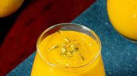

Mango Lassi

Description
Mango Lassi is a traditional Indian drink made with ripe mangoes, yogurt, sugar, and a touch of cardamom.
It is a refreshing, creamy beverage that combines the sweetness of mangoes with the tanginess of yogurt. Often served chilled, it is popular during hot weather or as a complement to spicy meals.
Ingredients
- Ripe mangoes - 1 medium-sized mango (peeled and chopped)
- Plain yogurt - 1/2 cup (around 120 grams)
- Milk - 1/2 cup (to adjust consistency)
- Sugar - 2-3 tablespoons (adjust to taste)
- Cardamom powder - 1/4 teaspoon (optional)
- Ice cubes - a few (optional, for extra chill)
- Water - as needed to adjust consistency (optional)
Steps
- Blend mangoes: In a blender, add 1 peeled and chopped ripe mango. Blend until smooth.
- Add yogurt and milk: Add 1/2 cup of plain yogurt and 1/2 cup of milk to the blender. Blend again to combine.
- Sweeten and flavor: Add 2-3 tablespoons of sugar (or to taste) and 1/4 teaspoon of cardamom powder (optional). Blend again until smooth and well-mixed.
- Adjust consistency: If the lassi is too thick, add a little water or more milk to reach your desired consistency. Blend once more.
- Serve and chill: Pour the mango lassi into glasses, add a few ice cubes if desired, and serve chilled.